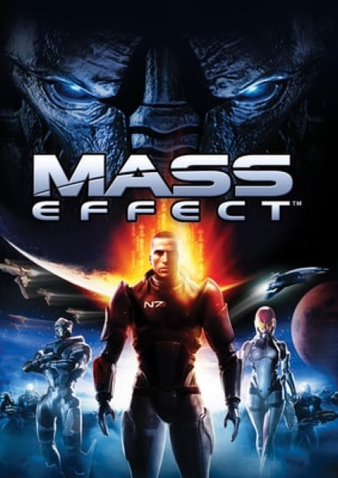

RPG · 2007
Mass Effect
A space opera that remembered what you said three games ago.

Cover: Wikipedia: Mass Effect (video game)
Facts
- Released
- 2007-11-20
- Genre
- Action RPG
- Category
- RPG
- Platforms
- PC, PlayStation, Xbox
- Developers
- BioWare, Demiurge Studios, Edge of Reality
- Publishers
- CD Projekt, Electronic Arts, Square Enix, Xbox Game Studios
PC requirements
- Minimum
- [object Object]